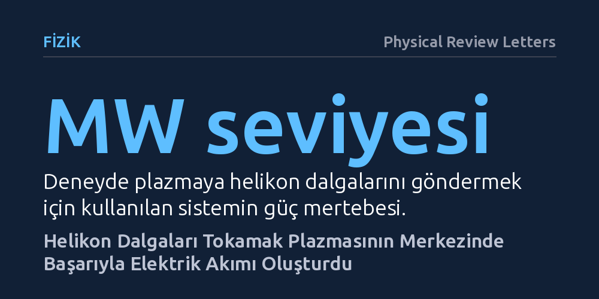

FIZIK · Physical Review Letters · 2026-10-11
Araştırmacılar, füzyon reaktörlerinde plazmayı kesintisiz tutmak için helikon radyo dalgalarının akım üretip üretemeyeceğini DIII-D reaktöründe inceledi. Megavat düzeyindeki dalgaların plazma merkezine enerji aktardığı ve tarihte ilk kez bir cihazda ek akım oluşturduğu kanıtlandı.
Geleceğin füzyon enerji santrallerinin kesintisiz çalışabilmesi için plazmanın çekirdeğine dışarıdan akım beslemenin pratik bir yolu ilk kez deneysel olarak doğrulandı.

Güneş'i ısıtan nükleer füzyon tepkimelerini yeryüzünde kontrol altına alabilmek için tokamak adı verilen simit biçimli manyetik kaplar kullanılır. Bu kapların içinde yüz milyonlarca dereceye ısıtılan plazmanın manyetik kafesten kaçmadan kalabilmesi, içerisinden güçlü bir elektrik akımının sürekli geçmesine bağlıdır. Ancak mevcut reaktörlerin çoğu, bu akımı indüklemek için sınırlı kapasiteye sahip transformatör mekanizmaları kullanır; bu da deneylerin dakikalar ya da saniyelerle sınırlı kalmasına yol açar.
Geleceğin santrallerinin kesintisiz elektrik üretebilmesi için plazma akımının dışarıdan sürekli beslenmesi gerekir. Bugüne kadar kullanılan geleneksel mikrodalga veya nötr parçacık yöntemleri, yoğun plazmanın derinliklerine inmekte zorlanmakta veya reaktör ölçeğinde çok yüksek güç kayıplarına uğramaktadır. Uzun yıllardır teoride önerilen helikon dalgalarının, yüksek yoğunluklu plazmanın tam kalbine ulaşıp akım üretebileceği düşünülüyordu; fakat bunun deneysel bir kanıtı bulunmuyordu.
Fizikçiler bu teoriyi test etmek amacıyla ABD'deki DIII-D adlı gelişmiş tokamak tesisinde özel bir deney ortamı hazırladı. Reaktöre, plazmaya helikon dalgaları gönderebilen hareketli dalga antenine sahip megavat mertebesinde güçlü bir verici sistemi kuruldu. Deneylerde plazmanın içine belirli bir yönde helikon dalgaları yönlendirildi.
Dalgaların oluşturduğu etkinin güvenilirliğini denetlemek için araştırmacılar kontrollü bir karşılaştırma yürüttü. Helikon dalgalarının uygulandığı atışlar, eşdeğer güçte standart elektron siklotron ısıtması uygulanan kontrol atışlarıyla kıyaslandı. Deney boyunca elektron sıcaklığı tepkileri hassas biçimde izlendi ve toplanan veriler, ışın izleme ve ısıl taşınım süreçlerini içeren zaman bağımlı entegre fizik simülasyonlarıyla adım adım karşılaştırıldı.
Elde edilen sonuçlar, helikon dalgalarının plazmanın merkezine başarıyla nüfuz ettiğini ve enerjisini buradaki elektronlara aktardığını gösterdi. Elektron sıcaklığında kaydedilen yükseliş profili, teorik modellerin ve simülasyonların öngörüleriyle tam uyum sergiledi.
Dahası, helikon gücü kesintisiz uygulandığında, manyetik alanın kararlılığını gösteren güvenlik faktörü profilinin belirgin biçimde daha hızlı düzleştiği ve iç plazma salınımlarının kontrol atışlarına göre çok daha erken tetiklendiği gözlendi. Yapılan hesaplamalar plazmanın merkezinde tepe noktasına ulaşan net bir elektrik akımı oluştuğunu doğruladı. Araştırma ekibi bu sonuçları, "herhangi bir cihazda helikon dalgalarına bağlı ek akım sürüşünün ilk kesin gözlemi" olarak değerlendirdi.
Bu çalışma, füzyon reaktörlerinde helikon dalgalarının yalnızca kağıt üzerinde kalan bir teori olmadığını, gerçek plazma ortamında da elektrik akımı oluşturabildiğini ortaya koyuyor. Özellikle gelecekte inşa edilecek yüksek yoğunluklu reaktörlerde, plazmanın merkezine akım enjekte edebilmek reaktörün kararlı ve sürekli çalışabilmesi açısından kritik bir işlev taşıyor.
Bununla birlikte, elde edilen başarı füzyon enerjisindeki tüm engellerin aşıldığı anlamına gelmiyor. DIII-D reaktöründe elde edilen bu ilk kanıtın, gelecekte çok daha büyük tesislerde ve ticari santral koşullarında tekrarlanması, verimliliğinin ve anten dayanıklılığının uzun süreli testlerde kanıtlanması gerekiyor.